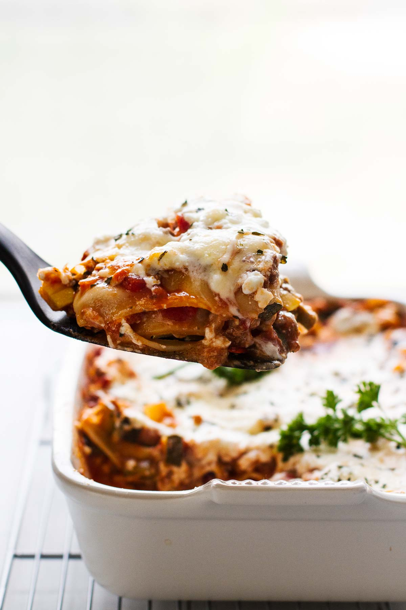

Lasagna

The BEST Easy Healthy Lasagna Recipe
The cheesiest, gooiest, creamiest, BEST Easy Healthy Lasagna Recipe for dinner tonight. All of the goodness of classic lasagna, but lightened up and loaded with healthy ingredients for a skinny version of the original recipe!
Ingredients
- 1/2 lb ground beef
- 1/4 onion (chopped)
- 2 zucchini (medium)
- 1 summer squash (medium)
- 15 oz. whole tomatoes (canned)
- 10 oz. tomato sauce
- 1/2 tsp garlic powder
- 1/2 tsp dried parsley
- 1 tsp dried basil
- 6 uncooked lasagna noodles
- 10 oz. cottage cheese (small curd)
- 1/2 cup parmesan (grated)
- 1 cup mozzarella (shredded)
- salt/pepper
Instructions
- Preheat oven to 375 degrees.
- Cook the chopped onion and ground beef until the beef is fully cooked.
- While the beef is cooking, cut the zucchini and summer squash into small, 1/4" - 1/2" cubes.
- Once the beef is done cooking, set aside and drain.
- Cook the zucchini and summer squash for about 10 minutes.
- Add in the tomatoes, tomato sauce, and spices.
- Continue cooking over medium heat for another 15 minutes, stirring often.
- Add the cooked beef and onions back into the tomato sauce mixture and stir.
- Pour about 1/2 of the tomato sauce mixture into a 8" x 10" casserole dish.
- Place 3 of the lasagna noodles on top of the mixture (breaking each one in half if necessary), pressing each one down so that it's covered with about 1/4" of the tomato mixture on top.
- Add 1/2 of the cottage cheese to the casserole dish.
- 1Top with 1/2 of the parmesan and 1/2 of the mozzarella.
- Repeat steps 9-12 with the remaining ingredients.
- Cover the casserole dish with foil and bake for 30 minutes.
- Uncover and bake for another 15 minutes.
- Serve warm and enjoy!
Notes
Carbs: 35 Fat: 10 Protein: 26